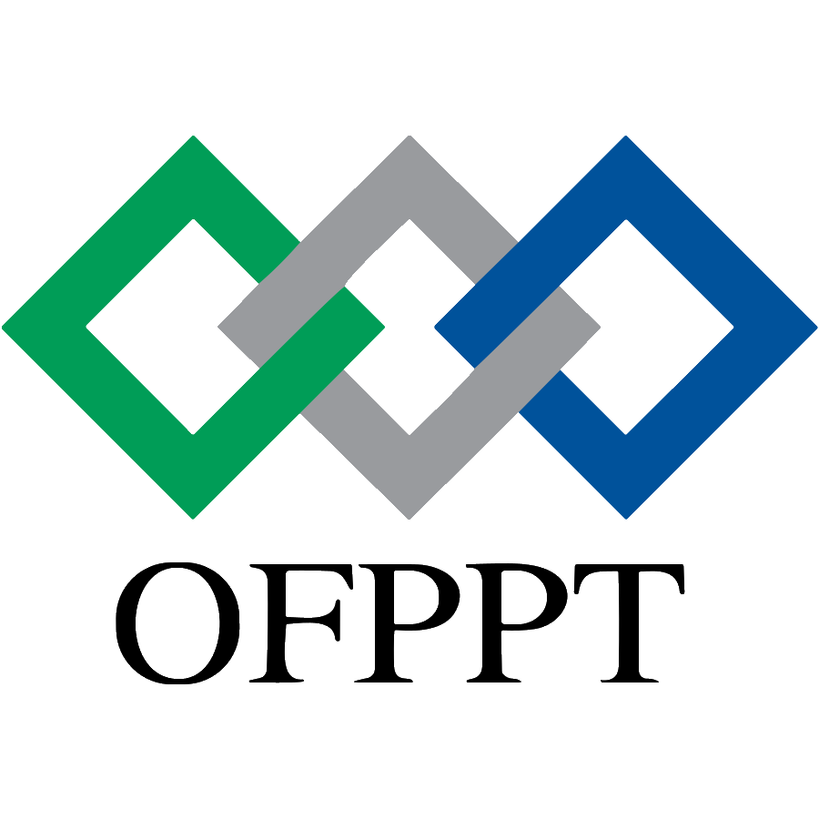

Réalisé par : Ali Znaki
Entreprise d'accueil : EaneerDev
Lieu : Technopark
Responsable de stage : M. Hamza Oubensalh
Technologies : Next.js, Tailwind CSS, Figma
Avant d'entamer la rédaction de ce rapport, je tiens à exprimer ma profonde gratitude à toutes les personnes qui ont contribué, de près ou de loin, au bon déroulement de ce stage et à la réalisation de ce travail.
Mes remerciements les plus sincères s'adressent tout d'abord à Monsieur Hamza Oubensalh, mon responsable de stage au sein de l'entreprise EaneerDev, pour m'avoir accueilli au sein de son équipe. Je le remercie chaleureusement pour sa disponibilité, ses conseils judicieux, et la confiance qu'il m'a accordée tout au long de cette période. Ses orientations techniques et son encadrement m'ont été d'une aide précieuse pour mener à bien mes missions. Grâce à sa pédagogie et sa patience, j'ai pu progresser rapidement dans la prise en main des outils et des technologies utilisées au sein de l'entreprise.
Je souhaite également adresser mes remerciements à l'ensemble du corps professoral et administratif de l'OFPPT, pour la qualité de l'enseignement dispensé et pour le soutien constant qu'ils nous apportent dans notre parcours de formation en Développement Digital. Leur dévouement joue un rôle fondamental dans notre préparation au monde professionnel. Ils nous ont transmis les bases solides en programmation, en logique algorithmique et en conception web qui m'ont permis d'aborder ce stage avec un socle de compétences fiable.
Je tiens aussi à remercier l'ensemble de l'équipe technique d'EaneerDev pour leur accueil chaleureux, leur esprit d'équipe et les moments de partage qui ont rendu cette expérience professionnelle particulièrement enrichissante sur le plan humain. Chaque membre de l'équipe a su, à sa manière, m'apporter une perspective nouvelle et des connaissances pratiques qui complètent parfaitement ma formation académique.
Enfin, je ne saurais oublier ma famille et mes amis pour leur soutien indéfectible et leurs encouragements constants. Leur présence et leur confiance ont été un pilier essentiel durant toute cette période de stage.
Dans le cadre de ma formation en Développement Digital à l'OFPPT, j'ai eu l'opportunité d'effectuer un stage de fin d'études au sein de l'entreprise EaneerDev, située au Technopark. Ce stage, qui s'inscrit dans une démarche de professionnalisation, représente une étape cruciale dans mon parcours académique, constituant une véritable passerelle entre les connaissances théoriques acquises durant ma formation et les réalités pratiques du monde de l'entreprise.
Le secteur du développement web connaît aujourd'hui une transformation profonde et accélérée. Les utilisateurs attendent des expériences numériques fluides, rapides et visuellement attrayantes, quel que soit l'appareil qu'ils utilisent. Les entreprises, quant à elles, recherchent des solutions web modernes, performantes et évolutives pour répondre à des besoins métiers de plus en plus complexes. Dans ce contexte, le rôle du développeur Front-End est devenu central : il est le garant de la qualité de l'interface utilisateur (UI) et de l'expérience utilisateur (UX), deux facteurs déterminants dans le succès d'un produit numérique.
C'est dans ce cadre technologique stimulant que s'est déroulé mon stage, avec pour mission principale le développement Front-End d'une application web innovante. Cette mission m'a placé au cœur du processus de création, depuis la réception des maquettes de design jusqu'à la livraison d'interfaces fonctionnelles, interactives et parfaitement adaptées aux standards modernes du web.
Durant cette période, j'ai été pleinement intégré à l'équipe de développement d'EaneerDev, sous la supervision de mon responsable, Monsieur Hamza Oubensalh. J'ai été chargé de transformer des maquettes de conception réalisées sur Figma en des interfaces web fonctionnelles, interactives et performantes, en utilisant des technologies de pointe telles que Next.js et Tailwind CSS. Ce travail a impliqué non seulement des compétences techniques en programmation, mais aussi une capacité d'analyse visuelle, un sens du détail et une compréhension approfondie des principes de conception d'interfaces.
Ce rapport de stage a pour vocation de retracer mon expérience professionnelle au sein d'EaneerDev de manière exhaustive. Il s'articule autour de plusieurs axes majeurs : dans un premier temps, une présentation détaillée de l'environnement d'accueil, notamment l'entreprise et le Technopark. Ensuite, je détaillerai les objectifs de mon stage, le planning suivi et les technologies employées. La partie centrale sera consacrée à la description approfondie des missions qui m'ont été confiées, allant de l'analyse des maquettes à l'intégration finale, en passant par la méthodologie de travail adoptée. Enfin, je ferai un bilan complet sur les difficultés rencontrées, les solutions apportées, ainsi que sur les compétences techniques et humaines acquises au cours de cette expérience formatrice, avant de conclure par mes perspectives d'avenir.
Mon stage s'est déroulé au sein du Technopark, un environnement emblématique et dynamique dédié aux entreprises opérant dans le secteur des Technologies de l'Information et de la Communication (TIC), de l'innovation et des technologies vertes. Le Technopark n'est pas seulement un espace de bureaux, c'est un véritable écosystème conçu pour favoriser la synergie, le réseautage et la croissance des startups et des entreprises technologiques.
Créé pour soutenir l'émergence d'un écosystème numérique marocain compétitif, le Technopark offre à ses entreprises résidentes un ensemble de services et d'avantages significatifs :
Évoluer dans un tel cadre a été particulièrement inspirant. La concentration d'entreprises innovantes, l'ambiance générale axée sur la création technologique et les échanges quotidiens avec des professionnels du digital ont constitué un cadre idéal pour une immersion réussie dans le monde professionnel du numérique. J'ai pu observer comment différentes startups abordent leurs problématiques techniques et comprendre les dynamiques qui animent l'écosystème tech marocain.
EaneerDev est une entreprise de développement logiciel reconnue pour son expertise dans la création de solutions digitales sur mesure. Établie au Technopark, elle accompagne ses clients dans leur transformation digitale en leur proposant des applications web et mobiles robustes, ergonomiques et à la pointe de la technologie.
Les principaux domaines d'intervention d'EaneerDev couvrent :
L'approche d'EaneerDev repose sur trois piliers fondamentaux : la qualité, l'innovation et la satisfaction client. L'entreprise adopte des méthodologies de travail modernes, notamment les méthodes agiles (Scrum), et s'appuie sur des stacks technologiques performantes pour répondre aux exigences complexes de ses partenaires. Le code est soumis à des revues régulières et les livrables sont testés rigoureusement avant chaque déploiement.
L'équipe, jeune et dynamique, cultive une culture d'entreprise basée sur la collaboration, l'entraide et le partage de connaissances. Cette atmosphère de travail bienveillante et stimulante a grandement facilité mon intégration et m'a permis de m'épanouir professionnellement durant toute la durée du stage.
L'équipe au sein de laquelle j'ai évolué est organisée de manière agile et polyvalente. Chaque membre apporte une expertise complémentaire qui contribue à la réussite des projets :
| Rôle | Responsabilités principales |
|---|---|
| Chef de projet / Responsable de stage | Coordination générale du projet, définition des priorités, revue de code, encadrement des stagiaires |
| Développeur Back-End | Conception des API REST, gestion de la base de données, logique métier côté serveur |
| Développeur Front-End (mon poste) | Intégration des maquettes, développement des composants UI, responsive design, optimisation des performances |
| Designer UI/UX | Création des maquettes Figma, définition du design system, prototypage des interactions |
Cette organisation m'a permis de comprendre concrètement comment les différents métiers du développement logiciel interagissent et se complètent dans un contexte professionnel. J'ai pu observer le flux de travail complet, depuis la conception du design jusqu'au déploiement de l'application, ce qui m'a offert une vision globale du cycle de vie d'un projet informatique.
Le projet sur lequel j'ai travaillé durant mon stage s'inscrit dans le cadre du développement d'une application web moderne pour l'un des clients d'EaneerDev. Cette application nécessitait une interface utilisateur riche, réactive et conforme aux standards actuels du web. Le client avait des attentes élevées en matière de qualité visuelle et de fluidité d'interaction, ce qui impliquait une intégration minutieuse et un souci du détail permanent.
La problématique centrale à laquelle j'ai été confronté peut se résumer ainsi : comment transformer efficacement des maquettes de design complexes en une interface web fonctionnelle, performante et maintenable, tout en respectant les délais de livraison et les exigences de qualité de l'entreprise ?
Cette question soulève plusieurs sous-problématiques techniques :
L'objectif principal de ce stage était de me plonger au cœur d'un projet de développement web réel, en me confiant la responsabilité du développement Front-End d'une application web. Il s'agissait de dépasser le cadre des exercices académiques pour me confronter aux exigences de production d'une entreprise professionnelle.
Les objectifs spécifiques qui m'ont été fixés comprenaient :
Le stage s'est déroulé de manière progressive, avec une montée en compétence graduelle. Voici le planning général que j'ai suivi :
| Semaine | Phase | Activités principales |
|---|---|---|
| Semaine 1 | Intégration & Découverte | Prise de connaissance de l'entreprise, installation de l'environnement de développement, découverte du projet et de la stack technologique, lecture de la documentation interne |
| Semaine 2 | Formation & Montée en compétence | Apprentissage approfondi de Next.js (App Router, Server Components), familiarisation avec Tailwind CSS, étude des maquettes Figma |
| Semaines 3-4 | Développement des composants | Création des composants réutilisables (Navbar, Footer, boutons, cartes, formulaires), mise en place du design system |
| Semaines 5-6 | Intégration des pages | Assemblage des composants en pages complètes, intégration des données statiques, mise en page pixel-perfect |
| Semaines 7-8 | Responsive & Optimisation | Adaptation responsive de toutes les pages, optimisation des performances, correction des bugs d'affichage, tests cross-browser |
Ce planning, bien que structuré, est resté flexible pour s'adapter aux priorités évolutives du projet et aux retours du responsable de stage. Certaines tâches se sont chevauchées, notamment le développement de composants et l'intégration des pages, qui ont été menés en parallèle lorsque cela était pertinent.
Pour mener à bien ce projet, j'ai dû me familiariser et maîtriser un ensemble d'outils et de technologies qui constituent aujourd'hui le standard du développement Front-End moderne. Cette section présente en détail chaque technologie utilisée, son rôle dans le projet et les compétences que j'ai acquises à travers son utilisation.
Figma a été l'outil central de communication entre la vision design et le développement technique. M. Hamza m'a fourni les maquettes complètes de l'application via cette plateforme collaborative de design.
L'importance de Figma dans le workflow de développement est capitale. Dans le cadre de mon stage, j'ai utilisé Figma pour :
Savoir « lire » correctement un fichier Figma est devenu une compétence indispensable pour assurer une intégration fidèle. J'ai appris à naviguer dans les calques (layers), à utiliser les composants et variantes de Figma, et à exploiter le mode « Inspect » pour extraire rapidement les propriétés CSS des éléments.
Le projet a été bâti sur Next.js, un framework React puissant développé par Vercel qui offre des fonctionnalités avancées prêtes à l'emploi. L'apprentissage et l'utilisation de Next.js ont été très enrichissants et ont considérablement élargi ma compréhension de l'écosystème React.
Voici les principales fonctionnalités de Next.js que j'ai exploitées durant mon stage :
page.js placé dans un dossier de l'arborescence
/app crée automatiquement une route accessible. Par exemple, un fichier
app/dashboard/page.js crée la route /dashboard. Cette approche rend la
création de pages très intuitive et élimine la nécessité de configurer un routeur manuellement.
'use client').
J'ai appris à identifier quand utiliser chaque type, en réservant les Client Components pour les
éléments nécessitant de l'interactivité (gestion d'état, événements utilisateur).next/image gère
automatiquement le chargement paresseux (lazy loading), le redimensionnement et la conversion en formats
modernes (WebP), ce qui contribue grandement à la performance de l'application.layout.js, j'ai pu définir des
mises en page communes (navbar, footer, sidebar) qui persistent entre les navigations de pages, évitant
les rendus inutiles et offrant une expérience de navigation fluide.L'utilisation de Next.js m'a permis de comprendre les avantages concrets d'un framework par rapport à une simple application React créée avec Create React App ou Vite, notamment en termes de performance, de SEO et de structure de projet.
Pour le styling de l'application, l'entreprise a opté pour Tailwind CSS, un framework CSS « Utility-First » qui a profondément changé ma façon d'aborder le styling des interfaces web.
Le principe fondamental de Tailwind est de fournir des classes CSS utilitaires de bas niveau (comme
flex, pt-4, text-center, bg-blue-500) que l'on compose
directement dans le code HTML/JSX pour construire n'importe quel design. Contrairement aux frameworks CSS
traditionnels comme Bootstrap qui fournissent des composants pré-stylisés, Tailwind offre une liberté totale
de design tout en maintenant une cohérence visuelle.
Les aspects de Tailwind CSS que j'ai particulièrement maîtrisés incluent :
sm:,
md:, lg:, xl: et 2xl: pour créer des mises en page
adaptatives. Par exemple, grid grid-cols-1 md:grid-cols-2 lg:grid-cols-3 crée une grille
qui passe d'une à trois colonnes selon la taille de l'écran.
tailwind.config.js : Extension de la configuration
par défaut pour ajouter les couleurs spécifiques du design, des polices personnalisées, des espacements
sur mesure et des breakpoints adaptés aux besoins du projet.hover:,
focus:, active:, disabled: pour styliser les différents états des
éléments interactifs sans écrire de CSS supplémentaire.
w-[23px],
bg-[#1a2b3c]) pour appliquer des valeurs CSS personnalisées.
Bien que Tailwind CSS ait nécessité un temps d'adaptation pour mémoriser les classes et adopter le paradigme « utility-first », il s'est révélé être un atout majeur pour développer rapidement des interfaces cohérentes et responsives. Le code JSX, bien que plus verbeux en termes de classes, élimine la nécessité de naviguer entre des fichiers CSS séparés, ce qui accélère considérablement le développement.
En plus des technologies principales, j'ai utilisé un ensemble d'outils complémentaires essentiels au workflow de développement professionnel :
| Outil | Rôle | Utilisation dans le projet |
|---|---|---|
| Visual Studio Code | Éditeur de code | Environnement de développement principal, avec des extensions comme Tailwind CSS IntelliSense, ES7 React Snippets et Prettier pour le formatage automatique du code |
| Git & GitHub | Gestion de versions | Suivi des modifications du code, travail sur des branches séparées (feature branches), pull requests pour la revue de code, et résolution de conflits de merge |
| Node.js & npm | Environnement d'exécution & gestionnaire de paquets | Exécution du serveur de développement Next.js, installation et gestion des dépendances du projet |
| Chrome DevTools | Outils de débogage | Inspection des éléments DOM, débogage CSS, simulation d'écrans mobiles, analyse des performances de chargement, vérification du réseau |
| Navigateurs web | Tests cross-browser | Tests de compatibilité sur Google Chrome, Mozilla Firefox, Microsoft Edge et Safari pour s'assurer du rendu uniforme de l'application |
La maîtrise de ces outils est indispensable dans le quotidien d'un développeur Front-End. Chacun d'entre eux contribue à la productivité, à la qualité du code et à la fiabilité du produit final. J'ai notamment beaucoup progressé dans l'utilisation de Git, passant de commandes basiques (add, commit, push) à une utilisation plus avancée incluant le travail avec des branches, la résolution de conflits et les pull requests.
Ma mission au sein d'EaneerDev s'est déroulée de manière méthodique et progressive, suivant les étapes classiques de la création d'une interface web professionnelle. Chaque phase a contribué à la construction d'un produit final cohérent et de qualité.
La première phase de mon travail a consisté en une analyse approfondie et systématique des maquettes fournies par mon encadrant. Avant d'écrire la moindre ligne de code, j'ai consacré un temps significatif à étudier l'ensemble du design sur Figma. Cette étape préparatoire, souvent sous-estimée, s'est révélée être l'une des plus importantes du processus d'intégration.
Mon analyse s'est structurée en plusieurs phases :
Cette phase d'analyse m'a permis d'anticiper la structure des composants React à créer et de définir la
configuration de base de Tailwind CSS dans le fichier tailwind.config.js. Elle a
considérablement réduit les allers-retours entre le code et les maquettes durant la phase de développement.
Fort de mon analyse, j'ai entamé le développement avec une approche modulaire et atomique. Plutôt que de coder des pages monolithiques (une approche courante chez les développeurs débutants), j'ai adopté les bonnes pratiques de l'industrie en structurant l'application en composants réutilisables, suivant les principes du « Component-Based Architecture ».
L'organisation du dossier /components a été structurée de manière hiérarchique :
J'ai d'abord créé les briques élémentaires de l'interface :
En assemblant les composants de base, j'ai créé des composants plus complexes :
Cette organisation rigoureuse a permis de garder un code propre, lisible et facilement maintenable, tout en évitant la redondance. Modifier le style d'un bouton, par exemple, se faisait en un seul endroit et se répercutait automatiquement sur toute l'application.
Une fois les composants de base prêts, je suis passé à l'assemblage des différentes vues pour former les pages complètes de l'application web. Cette phase constitue le cœur de mon travail d'intégrateur Front-End et a mobilisé la plus grande partie de mon temps de stage.
L'objectif était d'obtenir un résultat « Pixel-Perfect », c'est-à-dire visuellement identique à la maquette Figma, au pixel près. Pour y parvenir, j'ai adopté une méthodologie rigoureuse :
<header>, <main>,
<section>, <article>, <aside>,
<footer>). Cette approche garantit l'accessibilité de l'application et améliore le
référencement naturel.
flex, justify-center, items-center, gap-4) et CSS
Grid (grid, grid-cols-3) pour construire des layouts complexes. La combinaison
de ces deux systèmes de mise en page m'a permis de reproduire n'importe quelle disposition prévue dans
les maquettes.transition-all duration-300), et les changements d'état
visuels pour rendre l'interface vivante et engageante.Les principales pages que j'ai intégrées comprennent :
Aujourd'hui, une application web doit fonctionner parfaitement sur tous les appareils. Avec la diversité des tailles d'écran disponibles sur le marché (smartphones de 320px à 428px, tablettes de 768px à 1024px, ordinateurs de 1280px et au-delà), la mise en place d'un design responsive est devenue une exigence incontournable.
J'ai consacré une part significative de mon temps à rendre l'interface responsive, en adoptant une approche « Mobile-First » recommandée par mon responsable de stage. Cette approche consiste à concevoir d'abord pour les petits écrans, puis à enrichir progressivement la mise en page pour les écrans plus grands.
Les techniques et adaptations que j'ai mises en œuvre incluent :
grid-cols-1 md:grid-cols-2 lg:grid-cols-3).useState de React.
next/image et la propriété sizes, pour éviter de charger des
images haute résolution sur mobile.hidden md:block) pour prioriser le contenu essentiel et éviter la surcharge visuelle.p-4 md:p-8 lg:p-12).J'ai systématiquement testé le responsive design en utilisant les outils de simulation de Chrome DevTools, en vérifiant le rendu sur les résolutions les plus courantes : iPhone SE (375px), iPhone 12/13/14 (390px), iPad (768px), iPad Pro (1024px) et les écrans desktop standards (1280px, 1440px, 1920px).
La phase de développement a été suivie de cycles de tests et de corrections rigoureux. Cette étape, bien que moins « créative » que le développement initial, est tout aussi cruciale pour livrer un produit de qualité professionnelle.
Les types de bugs que j'ai identifiés et corrigés incluent :
width en pixels) au lieu de
valeurs relatives (% ou vw). La solution a consisté à utiliser des unités
relatives et des propriétés comme min-width et max-width.truncate, overflow-hidden et
text-ellipsis pour gérer élégamment ces cas.
backdrop-filter) ne s'affichaient pas correctement sur tous les navigateurs. J'ai
ajouté des préfixes vendor et des fallbacks CSS pour assurer la compatibilité.z-index pour
éviter les conflits visuels.Suite aux retours de M. Hamza et à mes propres observations, j'ai également apporté des améliorations significatives à l'interface :
transition-all duration-300 ease-in-out) pour une expérience utilisateur plus douce et
naturelle.focus:ring-2 focus:ring-blue-500) pour une meilleure accessibilité.Au-delà de l'aspect purement visuel, j'ai également travaillé sur l'optimisation des performances de l'application, un aspect fondamental de l'expérience utilisateur moderne. Un site lent est un site que les utilisateurs quittent : selon les études, 53% des visiteurs mobiles quittent un site qui met plus de 3 secondes à charger.
Les optimisations que j'ai mises en place comprennent :
next/image
qui gère le lazy loading (chargement paresseux), le dimensionnement automatique et la conversion en
format WebP. Les images ont été compressées et redimensionnées pour réduire leur poids sans perte de
qualité visible.dynamic import de
Next.js pour les composants lourds (graphiques, modales) qui ne sont chargés que lorsqu'ils sont
nécessaires, réduisant ainsi le poids du bundle JavaScript initial.useMemo,
useCallback) pour éviter les re-rendus inutiles des composants, et du composant
React.memo pour mémoriser les composants coûteux.
L'organisation quotidienne du travail au sein d'EaneerDev suit une structure bien définie qui favorise la productivité et la communication au sein de l'équipe. Voici le déroulement typique d'une journée de travail durant mon stage :
| Horaire | Activité | Description |
|---|---|---|
| 09h00 - 09h15 | Daily Stand-up | Réunion courte avec l'équipe pour partager l'avancement de la veille, les objectifs du jour et les éventuels blocages |
| 09h15 - 12h30 | Développement (session du matin) | Phase de développement concentré : intégration de composants, codage de nouvelles fonctionnalités, résolution de bugs |
| 12h30 - 14h00 | Pause déjeuner | Moment de détente et d'échanges informels avec les collègues |
| 14h00 - 17h00 | Développement (session de l'après-midi) | Suite du développement, tests responsive, revue de code avec le responsable, corrections et améliorations |
| 17h00 - 17h30 | Récapitulatif & Push | Sauvegarde du travail (git commit & push), mise à jour des tickets de tâches, préparation du lendemain |
Cette routine a été essentielle pour maintenir un rythme de travail productif et régulier. Le daily stand-up, en particulier, m'a appris l'importance de la communication proactive dans un environnement professionnel. Présenter mon travail chaque matin devant l'équipe m'a aidé à structurer ma pensée et à identifier rapidement les points de blocage.
Le processus de développement au sein d'EaneerDev suit un workflow structuré basé sur Git, garantissant la qualité et la traçabilité du code :
git checkout -b feature/nom-de-la-fonctionnalité). Cette pratique isole les modifications
en cours et évite de polluer la branche principale avec du code incomplet.git commit -m "feat: ajouter le composant Navbar responsive"). Chaque commit représente une
unité logique de travail, facilitant l'historique et le suivi des modifications.
Ce workflow, bien que plus exigeant qu'un simple « push » direct, garantit la stabilité du code et m'a préparé aux pratiques professionnelles utilisées dans l'industrie du développement logiciel.
Au cours de ce stage, j'ai été confronté à plusieurs défis techniques et organisationnels qui m'ont poussé à approfondir mes recherches, à développer ma capacité de résolution de problèmes et à solliciter l'aide de mon équipe lorsque nécessaire. Ces difficultés, loin d'être des obstacles insurmontables, se sont révélées être de véritables opportunités d'apprentissage.
Problème : Ayant principalement travaillé avec React pur (Create React App ou Vite) durant
ma formation, l'architecture de Next.js m'a semblé complexe au début. Le système de routage basé sur les
dossiers (App Router), la distinction entre Server Components et Client Components, et les concepts de
SSR/SSG étaient des notions nouvelles pour moi. Je me retrouvais régulièrement avec des erreurs liées à
l'utilisation de hooks React (comme useState ou useEffect) dans des Server
Components, ce qui n'est pas autorisé.
Solution : J'ai consacré les premières journées à lire attentivement la documentation
officielle de Next.js, qui est très bien structurée et comporte de nombreux exemples pratiques. J'ai
également suivi des tutoriels vidéo sur YouTube pour visualiser concrètement les concepts. Progressivement,
j'ai développé une compréhension solide de l'architecture et j'ai appris à utiliser la directive
'use client' de manière appropriée. Mon responsable a également pris le temps de m'expliquer
les choix architecturaux du projet, ce qui a accéléré ma compréhension.
Problème : Parfois, il était difficile de reproduire un effet très spécifique du design Figma en utilisant uniquement les classes par défaut de Tailwind. Par exemple, certaines valeurs d'espacement (comme un padding de 18px) n'existaient pas dans l'échelle de valeurs prédéfinies de Tailwind. De même, certaines couleurs du design n'avaient pas d'équivalent dans la palette par défaut.
Solution : J'ai appris à étendre la configuration de Tailwind dans le fichier
tailwind.config.js pour ajouter des couleurs personnalisées, des valeurs spécifiques
d'espacement et des polices custom correspondant au design system du projet. Pour les cas très particuliers,
j'ai maîtrisé l'utilisation de l'arbitrary value syntax (ex : p-[18px],
bg-[#1a2b3c]), une fonctionnalité puissante de Tailwind qui permet d'utiliser n'importe quelle
valeur CSS inline. Cette approche m'a donné la flexibilité nécessaire pour une intégration pixel-perfect.
Problème : Adapter des composants complexes (comme un tableau de bord riche en données avec plusieurs colonnes de statistiques, des graphiques et des tableaux) sur des écrans mobiles sans perdre en lisibilité a été un défi majeur. La simple réduction de taille ne suffisait pas : il fallait repenser l'organisation visuelle du contenu pour chaque breakpoint.
Solution : J'ai adopté une approche « Mobile-First » sur les conseils de M. Hamza. En concevant d'abord pour les petits écrans puis en ajustant progressivement pour les grands, la structure du code est devenue plus logique et les problèmes d'affichage ont été considérablement réduits. J'ai également appris à utiliser des techniques comme le masquage conditionnel d'éléments secondaires sur mobile, la transformation de tableaux de données en cartes empilables, et la réorganisation des grilles avec les breakpoints Tailwind.
Problème : Au début du stage, j'avais tendance à vouloir perfectionner chaque détail avant de passer à la tâche suivante, ce qui ralentissait ma progression globale. Je consacrais parfois trop de temps à un problème mineur au détriment de l'avancement général du projet.
Solution : Mon responsable m'a appris à prioriser mes tâches en distinguant les éléments essentiels des détails secondaires. J'ai adopté la méthode « itérative » : d'abord faire fonctionner l'ensemble, puis revenir affiner les détails. J'ai également appris à définir un temps maximum pour chaque tâche et à demander de l'aide si je restais bloqué trop longtemps, plutôt que de m'obstiner seul.
Ce stage a constitué un véritable accélérateur de compétences, tant sur le plan technique que sur le plan humain. Les semaines passées au sein d'EaneerDev m'ont permis de consolider mes acquis théoriques, d'acquérir de nouvelles compétences pratiques et de développer une vision professionnelle du métier de développeur Front-End.
Ce stage m'a permis de consolider mes acquis théoriques et d'acquérir de nouvelles compétences techniques valorisantes et directement applicables dans le monde professionnel :
Au-delà de l'aspect technique, l'immersion chez EaneerDev a été très formatrice sur le plan professionnel et humain. Ces compétences transversales sont tout aussi importantes que les compétences techniques dans une carrière de développeur :
En conclusion, ce stage de fin d'études au sein de l'entreprise EaneerDev, implantée dans l'écosystème stimulant du Technopark, a été une expérience extrêmement positive et formatrice qui a largement dépassé mes attentes initiales. Il a parfaitement répondu à ses objectifs en me plongeant dans la réalité quotidienne du métier de développeur Front-End, avec ses défis techniques, ses exigences de qualité et ses satisfactions professionnelles.
La mission qui m'a été confiée — le développement de l'interface d'une application web moderne — m'a permis de mettre en pratique et d'étendre considérablement les connaissances acquises lors de ma formation à l'OFPPT. La transition d'une maquette statique sur Figma vers une application interactive, responsive et performante, propulsée par les technologies Next.js et Tailwind CSS, a été un défi gratifiant qui m'a poussé à me dépasser continuellement.
Chaque étape du projet a contribué à forger mes compétences techniques : l'analyse minutieuse des maquettes m'a appris la rigueur, le développement modulaire des composants m'a enseigné les bonnes pratiques d'architecture logicielle, l'intégration pixel-perfect m'a développé le sens du détail, et l'optimisation des performances m'a sensibilisé aux enjeux de l'expérience utilisateur dans un contexte réel.
L'encadrement bienveillant et professionnel de Monsieur Hamza Oubensalh a été un facteur déterminant dans la réussite de ce stage. Il m'a non seulement guidé sur le plan technique, mais m'a aussi initié aux exigences de qualité, de rigueur, de communication et de collaboration indispensables dans le monde de l'entreprise. Ses retours constructifs et sa patience ont transformé chaque difficulté en une opportunité d'apprentissage.
Ce stage m'a également offert une vision claire de ce que signifie être un développeur professionnel au quotidien : la maîtrise des outils, certes, mais aussi la capacité à travailler en équipe, à communiquer efficacement, à s'adapter aux changements et à maintenir une curiosité permanente face aux évolutions technologiques.
Perspectives d'avenir :
Fort de cette expérience, je suis désormais convaincu de vouloir poursuivre ma carrière dans le développement web, avec une spécialisation en Front-End. Ce stage m'a ouvert les yeux sur plusieurs axes de développement que je souhaite explorer :
Bilan personnel :
Sur le plan personnel, cette immersion m'a apporté une grande confiance en mes capacités et une
motivation renouvelée. J'ai pris conscience que le développement digital est un domaine en constante
évolution qui exige de la curiosité, de l'humilité face aux technologies nouvelles et une remise en
question permanente. Ce stage me conforte dans mon choix de carrière : je sors de cette expérience
d'EaneerDev mieux préparé, plus confiant et profondément motivé pour relever de nouveaux défis
professionnels dans le monde passionnant du développement web.